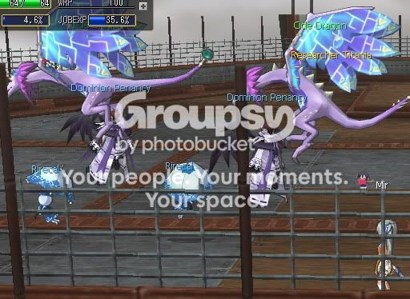
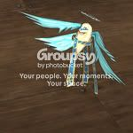

เพิ่มมอนซาก้า9 ล่ะ

http://eco.froztic.in.th/archive/ecofanclub/
http://eco.froztic.in.th/archive/ecofanclub/viewtopic.php?f=23&t=55361


หากต้องการคนบ้าเข้ามาฝลัดบอร์ดนี้เล่น "บอกได้" ค่าบริการไม่คิด
กรุณาตอบคำถามก่อนฟลัดด้วยว่า
1. เอาฝลัดน้อยๆ 2. เอาฟลัดกลางๆ 3. ฝลัดแบบถมบ้าน 4. ไม่เอาอะไรเลย 55555


มอนใหม่(ค่อยๆเพิ่ม)
หมวดAnimal
Cicle Dragon
Level :98
HP : 100,000?
EXP / Job EXP : /
Attribute :
Personality:Active
Map : Upper Light Tower [Building A - ดาดฟ้าตึก A]
Item : Dragon Meat/Forbidden Fruit/Riped Magical Book/Black Iris card UC/???(ชิ้นนี้ในวิกิญี่ปุ่นมีแต่ยังมะดรอปเพราะต้องใช้สกิวถึงดรอปรอเปิดเชิฟเว่อจะไปทดสอบครับ)



freedom? เขียน:ถ้ามูลชั่วคราวนะครับ
บอสไก่ หุ่นยน ดรอป Exp 15000/6000
เวล99ไปตีได้ มา1500/600 เลยคิดว่าน่าจะ15000/6000